History & Society
385 no-prep History & Society resources with answer keys: reading comprehension, reading trails, and more – filter by grade.
385 resources
Grade

World War I Reading Comprehension Passages | History Scavenger Hunt 8-9

Celtic Village Reading Comprehension Passages | History Scavenger Hunt 5-6

T-Shirt Reading Comprehension Passages | Environment Scavenger Hunt 7-8

Money Reading Comprehension Passages | Economics Scavenger Hunt 3-4

Holiday Market Reading Comprehension Passages | Economics Scavenger Hunt 5-6

The World of Abstract Art Reading Comprehension | Reading Scavenger Hunt 7-8

Ancient Greece Reading Scavenger Hunt | Greek Art & Architecture Escape Activity

Ancient Egypt Reading Scavenger Hunt | Egyptian Art & History Escape Activity

Prehistory Reading Comprehension BUNDLE | Stone Age to Bronze Age

Art History Reading Comprehension BUNDLE | Renaissance, Impressionism

Citizenship Worksheets Bundle | Grades 5-8 | Constitution & Democracy Reading

Veterans Day Worksheets Bundle | Grades 5-8 | November Reading Comprehension

Ancient Civilizations Reading Comprehension BUNDLE | Egypt, Greece & Rome

Famous Artists Reading Comprehension BUNDLE | Cloze & Word Search
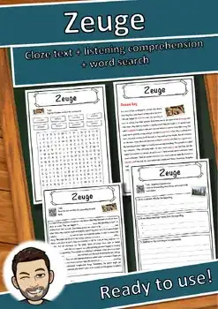
Zeuge – Reading Comprehension: Cloze Text, Listening Task & Word Search
Zelle – Reading Comprehension: Cloze Text, Listening Task & Word Search
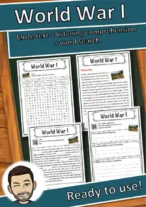
World War I – Reading Comprehension: Cloze Text, Listening Task & Word Search
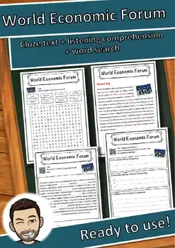
World Economic Forum – Reading Comprehension: Cloze, Listening & Word Search
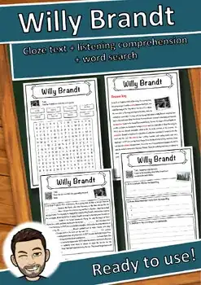
Willy Brandt – Reading Comprehension: Cloze Text, Listening Task & Word Search
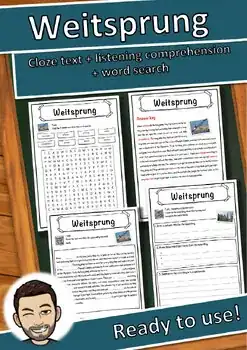
Weitsprung – Reading Comprehension: Cloze Text, Listening Task & Word Search
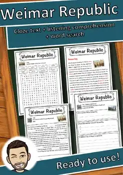
Weimar Republic – Reading Comprehension: Cloze, Listening & Word Search
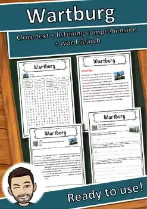
Wartburg – Reading Comprehension: Cloze Text, Listening Task & Word Search
Wallis – Reading Comprehension: Cloze Text, Listening Task & Word Search
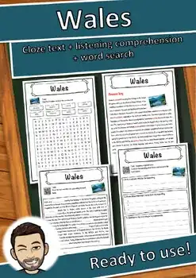
Wales – Reading Comprehension: Cloze Text, Listening Task & Word Search
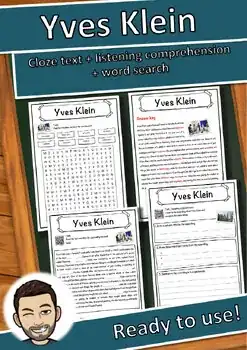
Yves Klein – Reading Comprehension: Cloze Text, Listening Task & Word Search
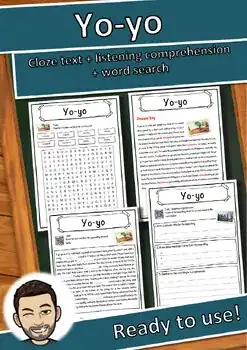
Yo-yo – Reading Comprehension: Cloze Text, Listening Task & Word Search
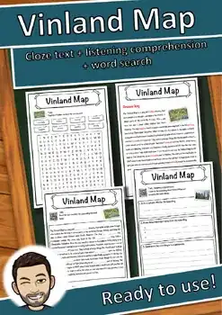
Vinland Map – Reading Comprehension: Cloze Text, Listening Task & Word Search
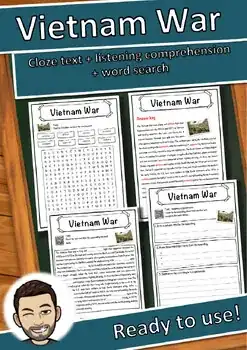
Vietnam War – Reading Comprehension: Cloze Text, Listening Task & Word Search
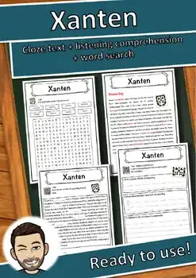
Xanten – Reading Comprehension: Cloze Text, Listening Task & Word Search
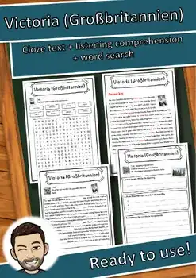
Victoria (Großbritannien) – Reading Worksheet: Cloze, Listening & Word Search
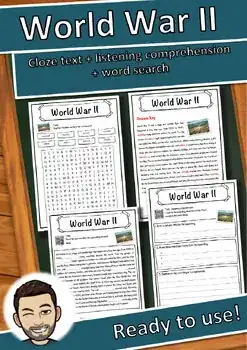
World War II – Reading Comprehension: Cloze Text, Listening Task & Word Search
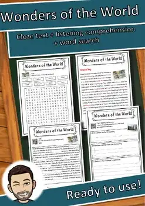
Wonders of the World – Reading Comprehension: Cloze, Listening & Word Search
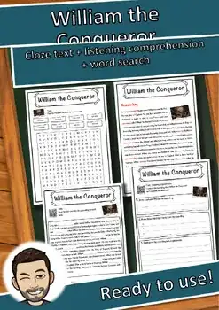
William the Conqueror – Reading Comprehension: Cloze, Listening & Word Search
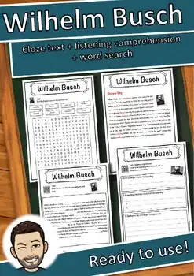
Wilhelm Busch – Reading Comprehension: Cloze Text, Listening Task & Word Search
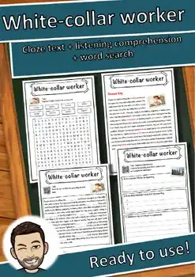
White-collar worker – Reading Comprehension: Cloze, Listening & Word Search
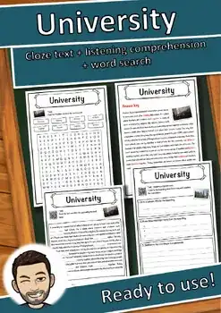
University – Reading Comprehension: Cloze Text, Listening Task & Word Search
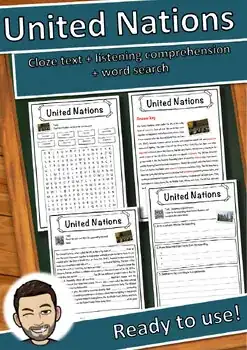
United Nations – Reading Comprehension: Cloze Text, Listening Task & Word Search
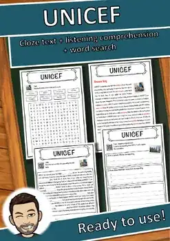
UNICEF – Reading Comprehension: Cloze Text, Listening Task & Word Search
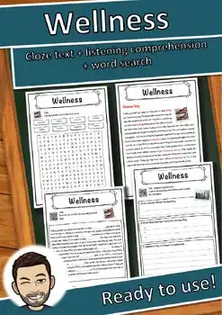
Wellness – Reading Comprehension: Cloze Text, Listening Task & Word Search
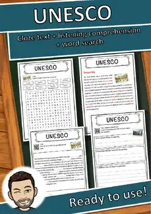
UNESCO – Reading Comprehension: Cloze Text, Listening Task & Word Search
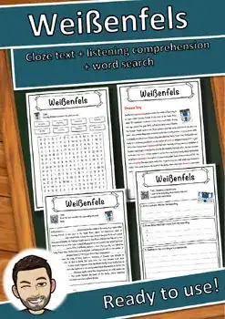
Weißenfels – Reading Comprehension: Cloze Text, Listening Task & Word Search
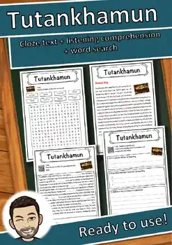
Tutankhamun – Reading Comprehension: Cloze Text, Listening Task & Word Search
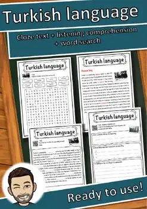
Turkish language – Reading Comprehension: Cloze, Listening & Word Search
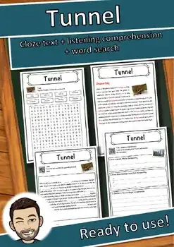
Tunnel – Reading Comprehension: Cloze Text, Listening Task & Word Search
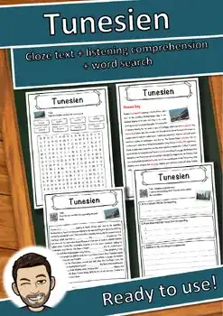
Tunesien – Reading Comprehension: Cloze Text, Listening Task & Word Search
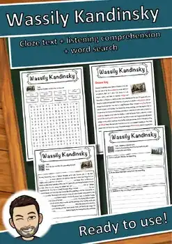
Wassily Kandinsky – Reading Comprehension: Cloze, Listening & Word Search
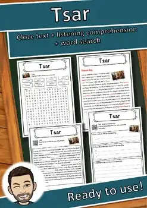
Tsar – Reading Comprehension: Cloze Text, Listening Task & Word Search
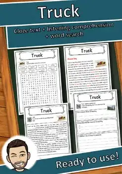
Truck – Reading Comprehension: Cloze Text, Listening Task & Word Search
No resources found – try a different search term or filter.